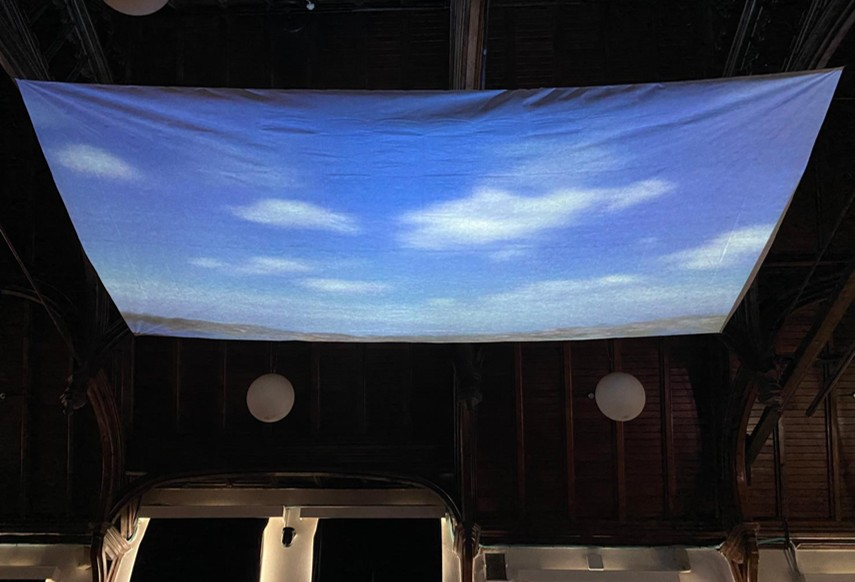

AllSky

Generative moving image installation
Shown here installed as part of the Camberwell Degree Show.
A Latent Diffusion Model I purpose-built from scratch continuously live generates smooth day/night cycles, on a 20-minute loop, projected on a 6x3m fabric sheet suspended from the ceiling.
Inspired by my research into operational images, I wanted to investigate how so much of our visual and media cultures are built upon technologies that fix velocities of light onto a 2d plane, used as tools of measurement and classification.
As visitors are constantly aware of the passage of time created by the piece, it demonstrates how new technologies can operate as alternative and speculative worldbuilding tools.